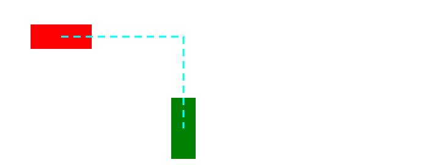
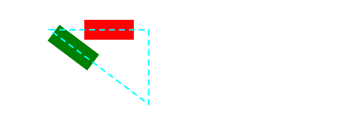
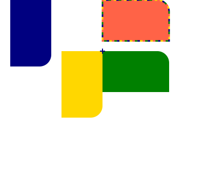
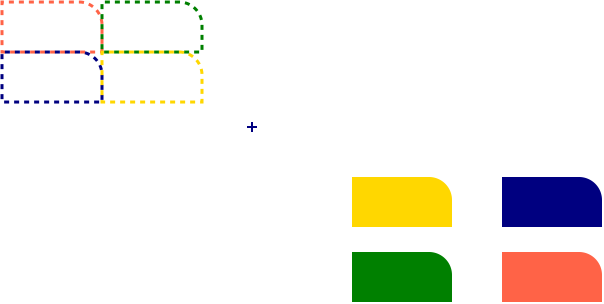
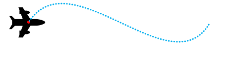
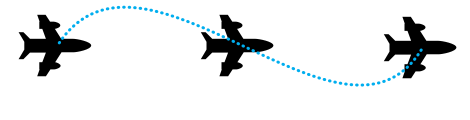
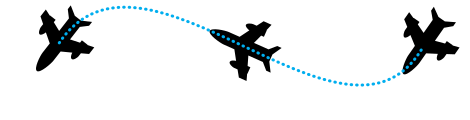
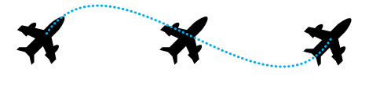

Motion path allows authors to position any graphical object and animate it along an author specified path.
Status of this document
This section describes the status of this document at the time of
its publication. Other documents may supersede this document. A list of
current W3C publications and the latest revision of this technical report
can be found in the W3C technical reports
index at https://www.w3.org/TR/.
Publication as a Working Draft does not imply endorsement by the W3C
Membership. This is a draft document and may be updated, replaced or
obsoleted by other documents at any time. It is inappropriate to cite this
document as other than work in progress.
GitHub Issues are preferred for discussion of this specification.
When filing an issue, please put the text “motion” in the title,
preferably like this:
“[motion] …summary of comment…”.
All issues and comments are archived,
and there is also a historical archive.
Authors have possibilities to position objects like boxes or containers relative to each other or absolutely in their own coordinate system. CSS Transforms extends these possibilities with a set of transform functions allowing authors to mutate the object’s local coordinate system. With CSS Animations and CSS Transitions, these static placements can change over a given period of time. Both kind of animations are powerful to express transitions in time but not suitable to describe transitions of location of an object over time.
This specification allows authors to specify a path. The object can be positioned, transitioned and animated along this path over a given period of time. The time may be static if no animation was specified.
In the following example, a schematic of an air plane is animated along a path. The plane faces in the direction of the path at each position on the path.
A black plane at different positions on a blue dotted path, rotated in the direction of the path.
2. Module interactions
This specification defines a set of CSS properties that affect the visual rendering of elements to which those properties are applied. These effects are applied after boxes have been sized and positioned according to the Visual formatting model from [CSS21]. Some values of offset-path and offset-position result in the creation of a stacking context and containing block.
Some CSS properties in this specification manipulate the user coordinate system of the element by transformations. These transformations are pre-multiplied to transformations specified by the transform property or deriving properties defined in CSS Transform Module Level 1 [CSS-TRANSFORMS-1], and post-multiplied to transformations specified by the individual transform properties translate, scale, and rotate, as explained in CSS Transform Module Level 2.
3. Values
This specification follows the CSS property definition conventions from [CSS21]. Basic shapes are defined in CSS Shapes Module Level 1 [CSS-SHAPES]. Value types not defined in these specifications are defined in CSS Values and Units Module Level 3 [CSS3VAL].
In addition to the property-specific values listed in their definitions, all properties defined in this specification also accept CSS-wide keywords such as initial and inherit as their property value [CSS3VAL]. For readability it has not been repeated explicitly.
4. Motion Paths
The Motion Path module allows specifying the position of a box as the distance (offset-distance) of the box’s anchor point (offset-anchor) along a geometrical path (offset-path) defined against the coordinates (offset-position) of its containing block. The box’s orientation can optionally be specified as a rotation (offset-rotate) with respect to the direction of the path at that point.
Specifies the offset path, a geometrical path the box gets positioned on.
An offset path is either a specified path with one or multiple sub-paths or the geometry
of a not styled basic shape.
In this specification, a direction (or rotation) of 0 degree is equivalent to the direction of
the negative y-axis in the object’s local coordinate system.
E.g. A rotation of 0 degree points to the upper side of the UA if the object
and its ancestors have no transformation applied.
The offset path is a line segment that starts from the position of the box and proceeds in the
direction defined by the specified <angle>. As with CSS gradients, <angle> values are interpreted
as bearing angles, with 0deg pointing up and positive angles representing clockwise rotation.
Note: Defining an offset path with <angle>,
the box can be positioned with the used of polar coordinates.
The polar coordinate system is a two-dimensional coordinate system in which each point on a plane
is determined by a distance from a fixed point and an angle from a fixed line.
The fixed point which is similar to the origin of a Cartesian coordinate system is called the pole,
and the fixed line which is a ray from the pole is the polar axis.
This coordinate system specifies the position of a point with a certain distance from the pole
and a certain angle measured from the polar axis to the segment connecting the pole.
In mathematical theory, the polar axis is commonly defined as the positive direction
of the x axis, but we consider the polar axis as the positive direction of the y axis
for consistency with other CSS specifications such as [CSS3VAL], <angle> value.
(as the preceding line doesn’t have "x axis position")
<size>
Decides the path length used when offset-distance is expressed as a percentage, using the distance to the containing box. For <size> values other than sides, the path length is independent of <angle>.
The distance is measured between the initial position and the closest side
of the box from it.
closest-corner
The distance is measured between the initial position and the closest corner
of the box from it.
farthest-side
The distance is measured between the initial position and the farthest side
of the box from it.
farthest-corner
The distance is measured between the initial position and the farthest corner
of the box from it.
sides
The distance is measured between the initial position and the intersection of the ray with the box. If the initial position is not within the box, the distance is 0.
Note: When the initial position is on one of the edges of
the containing block, the closest side takes the edge that the initial position
is on, and thus the path length used for percentage offset-distance values is 0.
contain
The used value of offset-distance is clamped so that the box is entirely contained within the path.
If no offset-distance would lead to the box being enclosed by the path, the path size is minimally increased so that such an offset-distance exists.
Here are some examples.
The first example shows that some parts of boxes are outside of the offset path.
offset-position is ignored for circle and ellipse basic shapes with explicit center positions, and for other types of basic shapes. If a circle or ellipse basic shape has no explicit center position, the shape is centered at the initial position of the path, as described in offset-position.
The initial position and initial direction of the path describe the position of the box along the path when offset-distance begins increasing from 0%.
The <string> represents an SVG Path data string.
The path data string must be conform to the grammar and parsing rules of SVG 1.1 [SVG11].
The initial position is defined by the first “move to” argument in the path string. For the initial direction follow SVG 1.1 [SVG11].
Offset paths (including references to SVG Paths) are closed loops only if the final command
in the path list is a closepath command ("z" or "Z"), otherwise they are unclosed intervals.
References to SVG circles, ellipses, images, polygons and rects are closed loops.
References to SVG lines and polylines are unclosed intervals.
To determine the used offset distance for a given offset path and offset distance:
Let the total length be the total length of offset path with all
sub-paths.
This example shows boxes placed along an unclosed interval.
<style>.item{width:100px;height:40px;offset-position:0%0%;offset-path:path('m 0 0 h 200 v 150');}#box1{background-color:red;offset-distance:-280%;}#box2{background-color:green;offset-distance:190%;}</style><body><divclass="item"id="box1"></div><divclass="item"id="box2"></div></body>

An example of boxes placed along an unclosed interval
This example shows boxes placed along a closed interval.
<style>.item{width:100px;height:40px;offset-position:0%0%;offset-path:path('m 0 0 h 200 v 150 z');}#box1{background-color:red;offset-distance:-280%;}#box2{background-color:green;offset-distance:190%;}</style><body><divclass="item"id="box1"></div><divclass="item"id="box2"></div></body>

An example of boxes placed along a closed interval
This example shows a way to align boxes within the polar coordinate system using offset-path, offset-distance.
offset-position is ignored if offset-path is a geometry-box, or a basic shape (other than a circle or ellipse with implicit center). In these cases, the geometry-box or basic shape specifies the initial position.
This example shows the interaction with the transform property, and with an individual transform property (rotate). The motion path transform is a vertical translation moving (left, top) to offset-position.
<style>#wrap{transform-style:preserve-3d;width:400px;height:350px;}.item{position:absolute;left:200px;top:0px;offset-position:200px100px;/* translates by 0px,100px */offset-anchor:lefttop;transform-origin:lefttop;width:130px;height:80px;border-top-right-radius:23px;}#box1{background-color:tomato;offset-position:auto;}#box2{background-color:green;}#box3{background-color:navy;rotate:90deg;/* applied before motion path transform */}#box4{background-color:gold;transform: rotate(90deg);/* applied after motion path transform */}</style><body><divid="wrap"><divclass="item"id="box1"></div><divclass="item"id="box2"></div><divclass="item"id="box3"></div><divclass="item"id="box4"></div></div></body>

An example when motion path and other transforms interact
This example uses positionstatic, so offset-position generates translations from the normal flow positions. By amplifying these translations using scale, the normal flow is rotated 180 degrees around the offset-position, and the boxes are exploded away from each other.
<style>#wrap{transform-style:preserve-3d;width:500px;height:250px;line-height:0px;}span{position:static;display:inline-block;width:100px;height:50px;border-top-right-radius:23px;scale:2.52.5;/* applied before motion path transform */offset-position:center;transform: scale(0.4);/* applied after motion path transform */}#box1{background-color:tomato;}#box2{background-color:green;}#box3{background-color:navy;}#box4{background-color:gold;}</style><body><divid="wrap"><div><spanid="box1"></span><spanid="box2"></span></div><div><spanid="box3"></span><spanid="box4"></span></div></div></body>

An example when motion path and scale interact
Defines an anchor point of the box positioned along the offset path.
The anchor point specifies the point of the box which is to be considered
as the point that is moved along the offset path.
A percentage for the horizontal offset is relative to width of content area.
A percentage for the vertical offset is relative to the height of the content area.
For example, with a value pair of '100%, 0%', an anchor point is on the upper right corner of the box.
Defines the orientation of the box while positioning along the offset path.
Values have the following meanings:
auto
Indicates that the object is rotated (over time if offset-distance is animated) by
the angle of the direction
(i.e., directional tangent vector) of the offset path, relative to the positive x-axis.
If specified in combination with <angle>, the computed value of <angle> is added
to the computed value of auto.
Note: For ray paths, the rotation implied by auto is 90 degrees less than the ray’s bearing <angle>.
reverse
Indicates that the object is rotated (over time if offset-distance is animated) by
the angle of the direction
(i.e., directional tangent vector) of the offset path, relative to the positive x-axis, plus 180 degrees.
If specified in combination with <angle>, the computed value of <angle> is added
to the computed value of reverse.
Indicates that the box has a constant clockwise rotation transformation applied
to it by the specified rotation angle.
See definitions of auto or reverse if specified in combination with
either one of the keywords.
When the offset path is a zero length path, the value of offset-rotate is 0 degree, the direction of the positive x-axis.
If the offset path is composed of multiple line segments, the orientation at the connection between the segments is the same as the direction of the previous segment.
Note: The rotation described here does not override or replace any rotation defined by the transform property.
The following examples use the shape of a plane.
The red dot in the middle of the shape indicates the anchor point of the shape.
When no offset properties are set, the shape is not translated or rotated along the path.

A black plane at the beginning of the path, with no offset properties set.
When the shape’s anchor point is placed at different positions along the path and offset-rotate is 0deg, the shape is not rotated.

A black plane at different positions on a blue dotted path without
rotation transforms.
If the offset-rotate property is set to auto, and the shape’s anchor point is
placed at different positions along the path,
the shape is rotated based on the gradient at the current position and faces
the direction of the path at this position.
A black plane at different positions on a blue dotted path,
rotated in the direction of the path.
In this example, the offset-rotate property is set to reverse.
The plane faces the opposite direction of the path at each position on the path.

A black plane at different positions on a blue dotted path,
rotated in the opposite direction of the path.
The last example sets the offset-rotate property to -45deg.
The shape is rotated anticlockwise by 45 degree once and keeps the rotation at each position
on the path.

A black plane at different positions on a blue dotted path,
rotated by a fixed amount of degree.
This example shows how auto or reverse work when specified in combination
with <angle>.
The computed value of <angle> is added to the computed value of auto or reverse.
The editors would like to thank to Eric Willigers for contributing to this specification.
Thanks to
fantasai,
Hyojin Song,
and
all the rest of the CSS WG members
for their reviews, comments, and corrections.
Conformance
Document conventions
Conformance requirements are expressed with a combination of
descriptive assertions and RFC 2119 terminology. The key words “MUST”,
“MUST NOT”, “REQUIRED”, “SHALL”, “SHALL NOT”, “SHOULD”, “SHOULD NOT”,
“RECOMMENDED”, “MAY”, and “OPTIONAL” in the normative parts of this
document are to be interpreted as described in RFC 2119.
However, for readability, these words do not appear in all uppercase
letters in this specification.
All of the text of this specification is normative except sections
explicitly marked as non-normative, examples, and notes. [RFC2119]
Examples in this specification are introduced with the words “for example”
or are set apart from the normative text with class="example",
like this:
This is an example of an informative example.
Informative notes begin with the word “Note” and are set apart from the
normative text with class="note", like this:
Note, this is an informative note.
Advisements are normative sections styled to evoke special attention and are
set apart from other normative text with <strong class="advisement">, like
this: UAs MUST provide an accessible alternative.
Conformance classes
Conformance to this specification
is defined for three conformance classes:
A style sheet is conformant to this specification
if all of its statements that use syntax defined in this module are valid
according to the generic CSS grammar and the individual grammars of each
feature defined in this module.
A renderer is conformant to this specification
if, in addition to interpreting the style sheet as defined by the
appropriate specifications, it supports all the features defined
by this specification by parsing them correctly
and rendering the document accordingly. However, the inability of a
UA to correctly render a document due to limitations of the device
does not make the UA non-conformant. (For example, a UA is not
required to render color on a monochrome monitor.)
An authoring tool is conformant to this specification
if it writes style sheets that are syntactically correct according to the
generic CSS grammar and the individual grammars of each feature in
this module, and meet all other conformance requirements of style sheets
as described in this module.
Partial implementations
So that authors can exploit the forward-compatible parsing rules to
assign fallback values, CSS renderers must treat as invalid (and ignore
as appropriate) any at-rules, properties, property values, keywords,
and other syntactic constructs for which they have no usable level of
support. In particular, user agents must not selectively
ignore unsupported component values and honor supported values in a single
multi-value property declaration: if any value is considered invalid
(as unsupported values must be), CSS requires that the entire declaration
be ignored.
Implementations of Unstable and Proprietary Features
Once a specification reaches the Candidate Recommendation stage,
non-experimental implementations are possible, and implementors should
release an unprefixed implementation of any CR-level feature they
can demonstrate to be correctly implemented according to spec.
To establish and maintain the interoperability of CSS across
implementations, the CSS Working Group requests that non-experimental
CSS renderers submit an implementation report (and, if necessary, the
testcases used for that implementation report) to the W3C before
releasing an unprefixed implementation of any CSS features. Testcases
submitted to W3C are subject to review and correction by the CSS
Working Group.